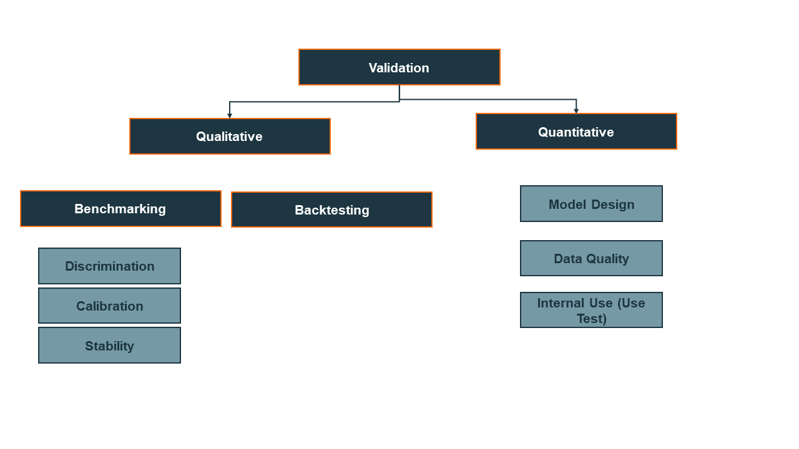

Credit Risk Modelling
Introduction
In general, there are three main model types within the area of credit risk models:
The models typically follow one of the below methodologies:
According to the European Central Bank (ECB)
1, "[r]egulators and supervisors attribute a
crucial role to the assessments conducted by internal validation functions throughout the life cycle of
internal models. The term 'internal validation function' encompasses the personnel of a credit
institution who are responsible for validating internal models and reporting the results of the internal validation process. In accordance with the requirements
set out in Regulation (EU) No 575/20131 (the Capital Requirements Regulation or CRR), credit institutions
must ensure that their Pillar I internal models for credit, market, counterparty credit and operational
risk are subject to a validation process with the aim of verifying the overall adequacy, robustness and
reliability of the internal estimates used to calculate own funds requirements."
The aim of any validation/monitoring activity is to assess the performance of a model in the following areas of investigation:
Validation of rating procedures is generally understood to mean the entire process of checking
of an internal rating system, from the validation of its discriminatory power to the process-oriented validation.

Backtesting
Überprüfung von in der Vergangenheit angestellten Prognosen über zukünftig
eintretende Ereignisse anhand von (beobachteten) Realisierungen
Discrimination
Die Trennschärfe eines Ratingsystems bezeichnet seine Fähigkeit, ex ante
zwischen ausgefallenen und nicht ausgefallenenen Kreditnehmern zu diskriminieren. Überprüfung
durch Ginikurve (Cumulative Accuracy Profile) und Ginikoeffizient (Accuracy Ratio), Receiver
Operating Characteristics (Area under Curve (AUC)) und ROC-Maß, und Entropie-Maße. Fähigkeit
eines Ratingsystems, die Schuldner gemäß ihrer Bonität richtig zu sortieren (Rangordnung).
Confusion Matrix, Receiver Operating Characteristics (ROC), Area Under the Curve (AUC) are performance measurements
Kritische Ausfallrate $PD^* = \Phi^{-1}(\alpha) \sqrt{\frac{PD (1- PD)}{n}} + PD$
Calibration
Calibration usually refers to the assignment of default probabilities to rating classes. A rating system is well calibrated if the estimated default probabilities deviate only slightly from the actual default rates. Match of predicted default rate with realized default rate per rating class.
Test via Binomial test, Chi-Square test, Normal test, and RAG status.
Ginikurve: Untersucht wird dabei die Fähigkeit des Verfahrens für einen bestimmten Zeitraum (lead time) eine Prognose über den Risikogehalt des Unternehmens im Vergleich zu den anderen Unternehmen im Portfolio abzugeben.
Vorgehensweise: Zunächst werden die Unternehmen nach ihrem Risikogehalt geordnet. Danach wird der Anteil ausgefallener Unternehmen unter den schlechtesten x% der Unternehmen bestimmt.
Gini-Koeffizient: Maß für die Trennschärfe eines Modells. Definiert als Quotient aus der Fläche zwischen der Ginikurve des Modells und der zufälligen Ginikurve dividiert durch die Fläche der perfekten Ginikurve und der zufälligen Ginikurve.
Konfidenzintervall für Ginikoeffizient: U-Statistik. Anzahl der Inversionen, d.h. Anzahl der Fälle, in denen ein ausgefallener Kreditnehmer einen besseren Risikoscore erhält als ein nicht ausgefallener Kreditnehmer. Mit Hilfe des U-Tests von Mann-Whitney lässt sich ein Konfidenzintervall für den Ginikoeffizienten bestimmen.
Binomial-Test: Voraussetzung: Ausfälle pro Ratingklasse sind unabhängig. Unter der Hypothese, dass die geschätzten Ausfallwahrscheinlichkeiten der Ratingklassen korrekt sind, wäre die tatsächlich nach einem Jahr zu beobachtende Zahl von Ausfällen pro Ratingklasse binomialverteilt. In der Praxis sind die Ausfällt aufgrund konjunktureller Einflüsse korreliert.
H0: PD der Ratingklasse ist korrekt
H1: PD der Ratingklasse wird unterschätzt
H0 wird bei einem Konfidenzniveau von $\alpha$ abgelehnt, falls die Anzahl der Ausfällt in einer Ratingklasse mit $n$ Kreditnehmern $k^*$ übersteigt.
Stability
Ein stabiles Ratingsystem zeichnet sich dadurch aus, dass es die
Ursache-Wirkung Beziehung zwischen den Risikofaktoren und der Bonität adäquat modelliert. Im
Gegensatz zu stabilen Systemen weisen instabile Systeme häufig eine im Zeitablau stark
nachlassende Prognosegüte auf. Adäquate Modellierung von Ursache-Wirkung-Beziehung zwischen
Risikofaktoren und Bonität.
Benchmarking
Model Design
Data Quality
Internal Use (Use Test)
Footnoes
1 Instructions for reporting the validation results of internal models - IRB Pillar I models for
credit risk; February 2019; European Central Bank